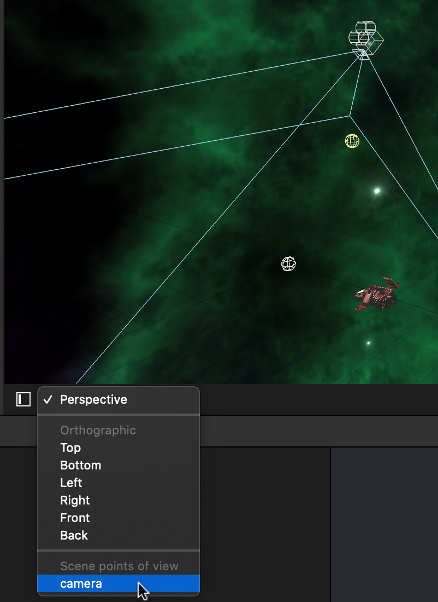

Estados
Vamos a definir 4 diferentes estados en los que podrá estar nuestro juego:
Title: Muestra la pantalla de título, haciendo tap sobre la pantalla pasaremos al estadoIntroductionIntroduction: La nave aparecerá desde la parte interior de la pantalla hasta ocupar su posición en el juego, pero todavía no será manejable. Una vez llegue a su posición en la escena (0, 0, 0), se pasará al estadoPlaying.Playing: En este estado podremos manejar la nave, moviendola lateralmente o disparando. Cuando un proyectil impacte contra nosotros, pasaremos al estadoGameOverGameOver: Mostrará la pantalla de Game Over indicando el número de asteroides que hemos destruido durante 3 segundos, y volverá a la pantalla de título.
En lugar de definir diferentes escenas para cada estado, vamos a utilizar una única escena e implementar dentro de ella la máquina de estados.
Máquina de estados¶
El videojuego se comportará como una máquina de estados. Para ello haremos lo siguiente:
TODO
D01
- Definiremos en
GameViewControlleruna enumeraciónGameStatecon los estados anterioresTODO
D02
- Incluiremos en la clase un campo
gameStatede tipoGameStatedonde indicaremos el estado actual del juego, que inicialmente seráTitle
Según el estado en el que estemos, mostraremos un contenido u otro en la escena, y permitiremos realizar determinadas acciones u otra. Por ejemplo, sólo deberían aparecer asteroides y deberíamos poder manejar la nave si estamos en estado Playing. Para ello haremos las siguientes modificaciones:
TODO
D03
- En
renderer(:, updateAtTime:)sólo generaremos asteroides y moveremos la nave si el estado actual esPlaying.TODO
D04
- En
handleTap(:)sólo dispararemos si estamos en estadoPlaying.
Vamos a definir ahora el contenido del resto de estados. Para simplificar la gestión de los estados, vamos a crear en la escena ship.scn dos nodos donde agruparemos todo el contenido a mostrar en los estados Title y GameOver, de forma que oculatando o mostrando dicho nodos podremos mostrar u ocultar todo el contenido de dichos estados.
TODO
D05
- Crearemos en la escena
ship.scndos nodos vacíos con los siguientes nombres:titleGroupgameOverGroup- Dado que estos nodos básicamente contendrán texto 3D frente a la cámara, los incluiremos como hijos del nodo cámara para que así siempre se muestren frente a ésta, aunque la movamos de posición o la rotemos.
- Dentro del nodo cámara, los ubicaremos en las coordenadas
(0, 0, -100), para que así estén100unidades frente a la cámara (la cámara por defecto mira hacia su eje Z negativo).
En los siguientes apartados daremos contenido a cada uno de estos estados.
Configuración de la pantalla de título¶
Vamos a crear en el editor de la escena el contenido de la pantalla de título. Mostramos a continuación, a modo orientativo, un ejemplo de cómo podría quedar:
TODO
D06
- En la pantalla de título (dentro del nodo
titleGroup) mostraremos texto 3D con el título del juego (por ejemplo Space Master 2020) y un texto que indique Tap to start, de forma similar a la imagen anterior
Consejo: Para editar los nodos de título y game over es recomendable que en el editor de la escena seleccionemos el punto de vista camera (esquina inferior-izquierda del editor de la escena). De esta forma, mientras editamos veremos lo que estaría viendo la cámara, y por lo tanto lo que se mostrará en el juego.

Configuración de la pantalla de Game Over¶
La pantalla de Game Over deberá tener un aspecto similar al siguiente:
TODO
D07
- En esta pantalla (
gameOverGroup) mostraremos el texto Game Over, y además otro texto que nos indique X asteroids destroyed.- Esta última cadena de texto deberá ser identificada con el nombre
gameOverResultsTextque nos permita obtener una referencia a ella desde el juego.
Ahora deberemos obtener referencias desde el código a los nodos que acabamos de crear, para así poder mostrarlos u ocultarlos cuando sea necesario.
TODO
D08
- Dentro del método
viewDidLoadobtendremos referencias a los nodostitleGroup,gameOverGroupyGameOverResultsText.- Para localizar dichos nodos, ¿deberemos hacer la búsqueda recursiva? Si no queremos que la búsqueda sea recursiva, ¿desde qué nodo deberemos buscarlos?
Transiciones entre estados¶
Encontramos los siguientes métodos con los que vamos a gestionar las transiciones entre los estados del juego:
startGame(): Transición del estadoTitleaIntroduction, que automáticamente dará paso aPlaying.showGameOver(): Transición del estadoPlayingaGameOver(cuando nos matan)showTitle(): Transición del estadoGameOveraTitle.
Vamos a implementar el contenido de dichos métodos como se indica a continuación:
TODO
D09
- Introducimos código en
showTitle()para hacer lo siguiente:- Cambiamos el estado a
Title- Mostramos el nodo
titleGroup(propiedadisHidden)- Ocultamos el nodo
gameOverGroup- Ocultamos el HUD
- Ocultamos la nave (
ship)
Podemos observar que al final del método viewDidLoad() se llama a showTitle(), por lo que si ejecutamos el juego ahora, deberá mostrarse la escena de título inicialmente.
TODO
D10
- Introducimos código en
startGame()para hacer lo siguiente:- Cambiamos el estado (
gameState) aIntroduction- Ocultamos
titleGroup(propiedadisHidden)- Mostramos el HUD
- Mostramos la nave (
ship)- Ponemos a '0' el contador
numAsteroidesy ponemos como cadena vacía "" el texto demarcadorAsteroides- Inicializamos la posición de la nave en
(0, 50, 50), tras la cámara- Ejecutamos una acción que mueva la nave a la posición
(0, 0, 0)en un segundo. Una vez en dicha posición cambiamos el estado aPlaying(puede utilizar acciones de tiposequence,moveyrun, ver documentación deSCNAction).TODO
D11
- Vamos ahora a añadir en
handleTap(:)código para que en caso de estar en estadoTitle, al hacer tap se llame astartGame().- De esta forma, si probamos ahora el juego veremos que ya podremos comenzar la partida haciendo tap en la escena de título.
TODO
D12
- Introducimos código en
showGameOver()para hacer lo siguiente:- Cambiamos el estado a
GameOver- Ocultamos el HUD
- Mostramos el nodo
gameOverGroup- Ponemos en
gameOverResultsTextel texto "X ASTEROIDS DESTROYED", sustituyendo X por el valor correcto.- Inicializamos la posición de
gameOverGroupen(0, 0, 0)- Inicializamos la opacidad de
gameOverGroupa1(opaco)- Ejecutamos una acción que mueva
gameOverGroupa (0, 0, -200) en 2 segundos, utilizando un modificador de tiempoeaseOut(ver propiedadtimingModedeSCNAction), y tras ello haga un fadeout del nodo en 0.5 segundos y llame ashowTitle()para volver al titulo.TODO
D13
- En el método
destroyShip(: , withAsteroid:)llamaremos al métodoshowGameOver(), para que cuando un asteroide impacte contra nuestra nave pasemos a la pantalla de Game Over.
Con esto habremos implementado todas las transiciones entre estados. Podemos probar el juego y ver cómo realiza las transiciones entre estados: Title - Introduction - Playing - GameOver - Title.